Stim_Mac_Response Lenient Thresholds
Sophie.Alice
2026-07-02
Last updated: 2026-07-16
Checks: 7 0
Knit directory: MT_Project/
This reproducible R Markdown analysis was created with workflowr (version 1.7.2). The Checks tab describes the reproducibility checks that were applied when the results were created. The Past versions tab lists the development history.
Great! Since the R Markdown file has been committed to the Git repository, you know the exact version of the code that produced these results.
Great job! The global environment was empty. Objects defined in the global environment can affect the analysis in your R Markdown file in unknown ways. For reproduciblity it’s best to always run the code in an empty environment.
The command set.seed(20260612) was run prior to running
the code in the R Markdown file. Setting a seed ensures that any results
that rely on randomness, e.g. subsampling or permutations, are
reproducible.
Great job! Recording the operating system, R version, and package versions is critical for reproducibility.
Nice! There were no cached chunks for this analysis, so you can be confident that you successfully produced the results during this run.
Great job! Using relative paths to the files within your workflowr project makes it easier to run your code on other machines.
Great! You are using Git for version control. Tracking code development and connecting the code version to the results is critical for reproducibility.
The results in this page were generated with repository version cf00065. See the Past versions tab to see a history of the changes made to the R Markdown and HTML files.
Note that you need to be careful to ensure that all relevant files for
the analysis have been committed to Git prior to generating the results
(you can use wflow_publish or
wflow_git_commit). workflowr only checks the R Markdown
file, but you know if there are other scripts or data files that it
depends on. Below is the status of the Git repository when the results
were generated:
Ignored files:
Ignored: .DS_Store
Ignored: .Rhistory
Ignored: .Rproj.user/
Ignored: analysis/.DS_Store
Note that any generated files, e.g. HTML, png, CSS, etc., are not included in this status report because it is ok for generated content to have uncommitted changes.
These are the previous versions of the repository in which changes were
made to the R Markdown (analysis/CM_Stim_Mac_Response.Rmd)
and HTML (docs/CM_Stim_Mac_Response.html) files. If you’ve
configured a remote Git repository (see ?wflow_git_remote),
click on the hyperlinks in the table below to view the files as they
were in that past version.
| File | Version | Author | Date | Message |
|---|---|---|---|---|
| Rmd | cf00065 | Sophie.Alice | 2026-07-16 | Update cardiomyocyte, fibroblast, and macrophage baseline/stimulated response analyses, including lenient |
| html | 28d634c | Sophie.Alice | 2026-07-16 | Build site. |
| Rmd | b1e9534 | Sophie.Alice | 2026-07-16 | Update cardiomyocyte, fibroblast, and macrophage baseline/stimulated response analyses, including lenient |
| html | de6f901 | Sophie.Alice | 2026-07-16 | Build site. |
| Rmd | 295e485 | Sophie.Alice | 2026-07-16 | Publish updated Cardiomyocyte, Fibroblast, and Macrophage analysis pages |
| html | 676253f | Sophie.Alice | 2026-07-16 | Build site. |
| html | a41e2a7 | Sophie.Alice | 2026-07-15 | Build site. |
| Rmd | aaec6d0 | Sophie.Alice | 2026-07-15 | CM DGEA |
1 Setup
rm(list=ls())
gc() used (Mb) gc trigger (Mb) limit (Mb) max used (Mb)
Ncells 908247 48.6 1754118 93.7 NA 1321095 70.6
Vcells 1601914 12.3 8388608 64.0 16384 2443419 18.7library(readr)
library(dplyr)
library(ggplot2)
library(Seurat)
library(hdf5r)
library(scCustomize)
library(patchwork)
library(cowplot)
library(ggrepel)
library(workflowr)
library(scDblFinder)
library(clustree)
library(harmony)
library(speckle)
library(MAST)
library(tibble)
library(EnhancedVolcano)
library(ggarchery)
library(ggtangle)
library(clusterProfiler)
library(org.Hs.eg.db)
library(GO.db)
library(DOSE)
library(fgsea)
library(forcats)
library(SCpubr)
library(assertthat)
library(UCell)
library(DT)
library(ggforce)
library(enrichplot)
library(ggrain)
library(aPEAR)2 Get the Data
path <- "/Users/sophiewagner/Desktop/USZ 25:26/Gabi_Project_Setup/Laila_MT_Project/Laila_MT_Project/RDS_Files/Post_Annotation.rds"
Data <- read_rds(path)
Cardiomyocytes <- subset(Data, cell_type == "Cardiomyocytes")
Idents(Cardiomyocytes) <- "orig.ident"
path2 <- "/Users/sophiewagner/Desktop/USZ 25:26/Gabi_Project_Setup/Laila_MT_Project/Laila_MT_Project/RDS_Files/All_Cardiomyocytes_DEG_Lists_Lenient.rds"
DEG.lists <- read_rds(path2)
custom_palette <- colorRampPalette(c("#005EA8", "#6DB335", "#FFD966", "#EDAAD2", "#9F1C67"))
gradient_colors3 <- custom_palette(6)
gradient_colors4 <- custom_palette(4)3 Functions
Volcano_Plots <- function(Data, Title, Subtitle, pCutoff = 0.05, FCcutoff = 0.5) {
# Clean extreme values
df <- Data
df <- df[is.finite(df$avg_log2FC) & is.finite(df$p_val_adj) &!is.na(df$p_val_adj), ]
if (any(df$p_val_adj == 0)) {
min_nonzero <- min(df$p_val_adj[df$p_val_adj > 0], na.rm = TRUE)
surrogate_p <- min(c(min_nonzero * 0.1, 1e-300))
df$p_val_adj[df$p_val_adj == 0] <- surrogate_p
}
# dynamic axis limits
xmax <- max(df$avg_log2FC, na.rm = TRUE)
xmin <- min(df$avg_log2FC, na.rm = TRUE)
ymax <- max(-log10(df$p_val_adj), na.rm = TRUE)
# Add padding
xpad <- (xmax - xmin) * 0.1
ypad <- ymax * 0.1
combined_subtitle <- paste0(Subtitle, " ● Thresholds: FDR < ", pCutoff, ", |Log2FC| > ", FCcutoff)
EV <- EnhancedVolcano(
df,
lab = df$gene,
x = 'avg_log2FC',
y = 'p_val_adj',
xlab = 'log2 Foldchange',
ylab = "-log10 FDR",
legendLabels = c('NS','log2FC','FDR','FDR & log2FC'),
col = c("darkgrey", "#005EA8", "#FFD966", "#9F1C67"),
title = Title,
subtitle = combined_subtitle,
xlim = c(xmin - xpad, xmax + xpad),
ylim = c(0, ymax + ypad),
pCutoff = pCutoff,
FCcutoff = FCcutoff,
cutoffLineType = 'dashed',
cutoffLineCol = 'black',
cutoffLineWidth = 0.6,
labSize = 3.0,
drawConnectors = TRUE,
widthConnectors = 0.5
)
return(EV)
}
##################################### Tables
create_table <- function(df) {
DT::datatable(
df,
extensions = 'Buttons',
options = list(
dom = 'Blfrtip',
buttons = c('copy', 'csv', 'excel', 'pdf'),
pageLength = 10,
lengthMenu = c(10, 25, 50, 100),
autoWidth = TRUE,
columnDefs = list(list(
targets = '_all',
className = 'dt-nowrap'
))
),
filter = 'top',
class = 'cell-border stripe hover nowrap'
)
}
#################################################### Raincloud Plots
raincloud.plots <- function(gene_list,
plot_title,
plot_subtitle,
seurat_obj = Data,
colors = gradient_colors4) {
valid_genes <- intersect(gene_list, rownames(seurat_obj))
expression_matrix <- FetchData(seurat_obj, vars = c(valid_genes, "ident"))
rain_data <- expression_matrix %>%
tibble::rownames_to_column("Cell_ID") %>%
tidyr::pivot_longer(
cols = all_of(valid_genes),
names_to = "Gene",
values_to = "Expression"
) %>%
dplyr::rename(Condition = ident)
raincloud_plot <- ggplot(rain_data, aes(x = Condition, y = Expression, fill = Condition, color = Condition)) +
geom_rain(
alpha = 0.6,
violin.args = list(color = NA),
boxplot.args = list(outlier.shape = NA),
point.args = list(
size = 0.4,
alpha = 0.4
),
group = 1
) +
facet_wrap(~Gene, scales = "free_y", ncol = 3) +
scale_fill_manual(values = colors) +
scale_color_manual(values = colors) +
theme_bw() +
labs(
title = plot_title,
subtitle = plot_subtitle,
x = "Experimental Conditions",
y = "Normalized Expression Level"
) +
theme(
plot.title.position = "plot",
plot.title = element_text(face = "bold", size = 12, hjust = 0),
plot.subtitle = element_text(face = "italic", size = 10, hjust = 0),
axis.text.x = element_text(angle = 45, hjust = 1, face = "bold", color = "black"),
axis.text.y = element_text(face = "bold", color = "black"),
axis.title.x = element_text(face = "bold"),
axis.title.y = element_text(face = "bold"),
strip.text = element_text(face = "bold", size = 10),
legend.position = "none"
)
return(raincloud_plot)
}4 DEGs of Stimulated Macrophage response
CMFHM_TGF vs CMF_TGF = Effect of Macrophage Presence on MT Cardiomyocytes with TGF-Beta Stimulation
Cutoffs Chosen: FDR <= 0.05, abs(log2FC) > 0.5
FDR <- 0.01
FC <- 1
Degs <- DEG.lists$Stim_Mac_Response
Degs.sign <- Degs %>%
filter(p_val_adj < FDR & abs(avg_log2FC) >= FC)
create_table(Degs.sign)Volcano_Plots(
Data = Degs,
Title = "DEG in MT-Cardiomyocytes stimulated with TGF-\u03b2",
Subtitle = "with Macrophages vs. Control",
pCutoff = FDR,
FCcutoff = FC
)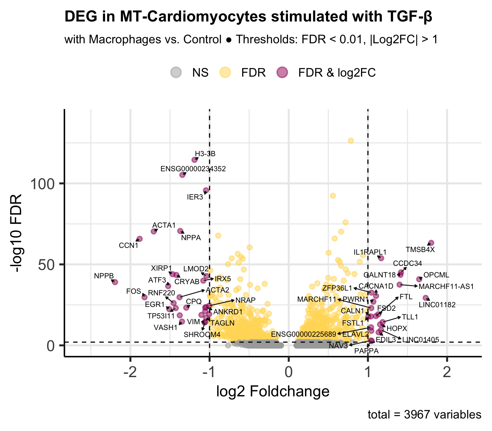
| Version | Author | Date |
|---|---|---|
| a41e2a7 | Sophie.Alice | 2026-07-15 |
5 FGSEA
5.1 Get Hallmark pathways
Hallmark.pathways <- gmtPathways("/Users/sophiewagner/Desktop/USZ 25:26/Gabi_Project_Setup/Laila_MT_Project/Laila_MT_Project/Hallmark/h.all.v2026.1.Hs.symbols.gmt")5.2 Rank the data
DEG.ranked <- Degs %>%
dplyr::select(gene, avg_log2FC) %>%
na.omit() %>%
distinct() %>%
group_by(gene) %>%
summarize(LFC = mean(avg_log2FC)) %>%
arrange(desc(LFC))
ranked <- deframe(DEG.ranked)
rank <- ranked[names(ranked) != ""]5.3 Functional gene set enrichment Analysis
############################## Hallmark
set.seed(42)
fgseares <- fgsea(pathways = Hallmark.pathways, stats = rank, nperm = 1000)
fgseares.tidy <- fgseares %>%
as_tibble() %>%
arrange(desc(NES))
fgseares.tidy <- fgseares.tidy %>%
dplyr::select(-ES, -nMoreExtreme)
fgseares.tidy.top.up <- head(fgseares.tidy, 15)
fgseares.tidy.top.down <- tail(fgseares.tidy, 15)
fgseares.tidy.top.both <- rbind(fgseares.tidy.top.up, fgseares.tidy.top.down)
create_table(fgseares.tidy)5.4 Visualization
plot_df <- fgseares.tidy.top.both %>%
mutate(
padj_group = case_when(
padj <= 0.05 ~ "< 0.05",
padj <= 0.2 ~ "0.05 – 0.2",
TRUE ~ "> 0.2"
),
padj_group = factor(padj_group, levels = c("< 0.05", "0.05 – 0.2", "> 0.2")),
pathway = gsub("HALLMARK_", "", pathway),
)
ggplot(plot_df, aes(reorder(pathway, NES), NES)) +
geom_col(aes(fill = padj_group), color = "black", linewidth = 0.2) +
coord_flip() +
scale_x_discrete(position = "top", labels = scales::label_wrap(50)) +
scale_fill_manual(
name = "adj. p-value",
values = c(
"< 0.05" = "#9F1C67",
"0.05 – 0.2" = "#FFD966",
"> 0.2" = "#005EA8"
),
drop = FALSE
) +
labs(
x = "",
y = "Normalized Enrichment Score (NES)",
title = "GSEA: Hallmark Pathways",
subtitle = "MT: Pathway changes CMFHM_TGF compared to CMF_TGF"
) +
theme_bw() +
theme(
aspect.ratio = 1.4,
axis.text.y = element_text(size = 8, hjust = 0),
axis.title = element_text(face = "bold"),
plot.title = element_text(hjust = 0, face = "bold"),
plot.subtitle = element_text(hjust = 0, size = 9, face = "italic"),
legend.position = "left"
)
| Version | Author | Date |
|---|---|---|
| a41e2a7 | Sophie.Alice | 2026-07-15 |
6 FGSEA - ClusterProfiler
- Done in this way for GO BP terms and compatibility with aPEAR Emapplot
set.seed(42)
ranked_vector <- Degs$avg_log2FC
names(ranked_vector) <- Degs$gene
ranked_vector <- sort(ranked_vector, decreasing = TRUE)
Humanlibrary <- org.Hs.eg.db
gsea_results <- gseGO(
geneList = ranked_vector,
OrgDb = Humanlibrary,
ont = "BP",
keyType = "SYMBOL",
minGSSize = 15,
maxGSSize = 800,
pvalueCutoff = 0.1,
pAdjustMethod = "BH"
)
gsea_sig_df <- gsea_results@result %>%
dplyr::filter(p.adjust < 0.05)
p_apear <- enrichmentNetwork(
enrichment = gsea_sig_df,
repelLabels = TRUE,
drawEllipses = TRUE,
fontSize = 3,
simMethod = "jaccard",
clustMethod = "hier",
colorBy = "NES",
colorType = "nes"
)
p_apear <- p_apear + labs(
title = "Network of Significant GO-BP Terms Identified by GSEA",
subtitle = "MT-Cardiomyocytes: differences in CMFHM_TGF compared to CMF_TGF",
color = "NES",
) +
theme(
plot.title.position = "plot",
plot.title = element_text(face = "bold", size = 12, hjust = 0),
plot.subtitle = element_text(face = "italic", size = 10, hjust = 0)
)
print(p_apear)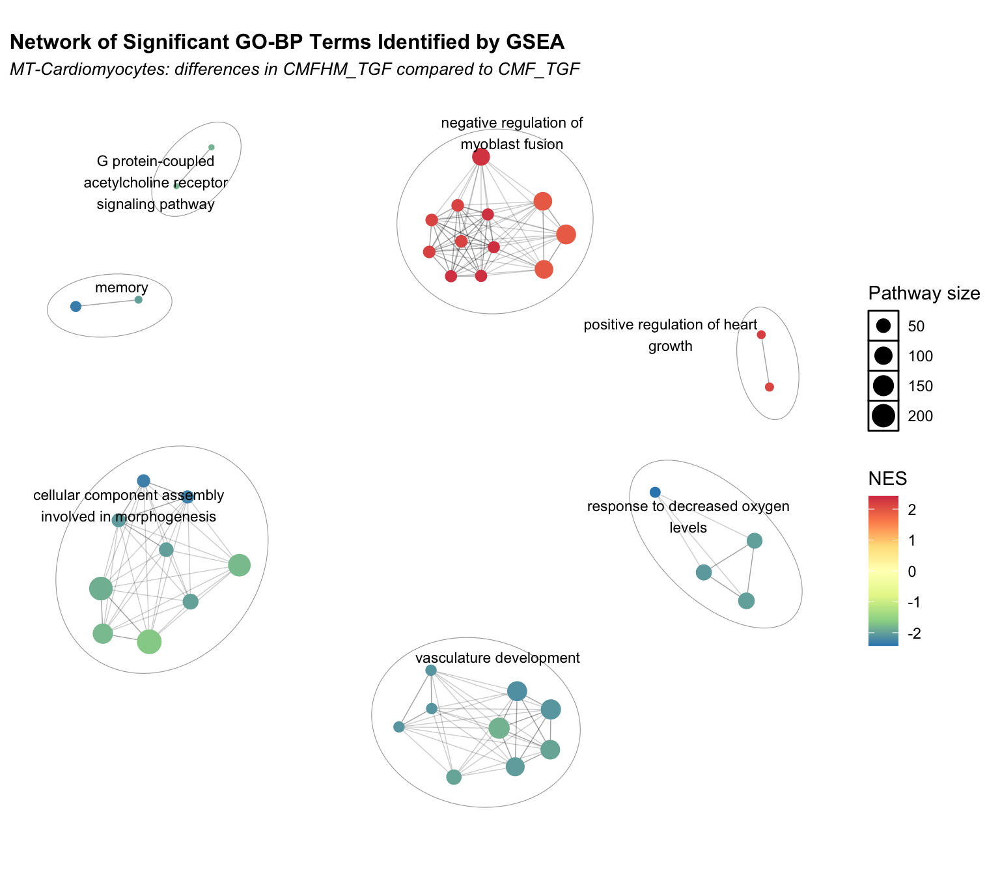
| Version | Author | Date |
|---|---|---|
| 28d634c | Sophie.Alice | 2026-07-16 |
7 PAH
df <- Degs
# Upregulated Genes
up_genes <- df %>%
filter(avg_log2FC > FC, p_val_adj <= FDR) %>%
distinct(gene) %>%
pull(gene) %>%
na.omit()
# Downregulated Genes
down_genes <- df %>%
filter(avg_log2FC < -FC, p_val_adj <= FDR) %>%
distinct(gene) %>%
pull(gene) %>%
na.omit()
# Background Universe Genes
universe <- df %>%
distinct(gene) %>%
pull(gene) %>%
na.omit()set.seed(42)
Humanlibrary <- org.Hs.eg.db
###################################### upregulated genes - 0 Pathways found!
up.GO <- enrichGO(
gene = up_genes,
universe = universe,
OrgDb = Humanlibrary,
keyType = "SYMBOL",
ont = "BP",
pAdjustMethod = "BH",
pvalueCutoff = 0.1,
minGSSize = 15,
maxGSSize = 800
)'select()' returned 1:1 mapping between keys and columns
'select()' returned 1:1 mapping between keys and columnsup.GO#
# over-representation test
#
#...@organism Homo sapiens
#...@ontology BP
#...@keytype ENTREZID
#...@gene chr [1:21] "7114" "11141" "91057" "374378" "4978" "107986407" "677" "776" ...
#...pvalues adjusted by 'BH' with cutoff < 0.1
#...0 enriched terms found
#...Citation
S Xu, E Hu, Y Cai, Z Xie, X Luo, L Zhan, W Tang, Q Wang, B Liu, R Wang, W Xie, T Wu, L Xie, G Yu. Using clusterProfiler to characterize multiomics data. Nature Protocols. 2024, 19(11):3292-3320 simp.up.GO <- clusterProfiler::simplify(up.GO)
# simp.up.GO.sign <- as.data.frame(simp.up.GO.show) %>%
# dplyr::filter(p.adjust < 0.05)
# create_table(simp.up.GO) # 0 enriched terms found!
###################################### downregulated genes
down.GO <- enrichGO(
gene = down_genes,
universe = universe,
OrgDb = Humanlibrary,
keyType = "SYMBOL",
ont = "BP",
pAdjustMethod = "BH",
pvalueCutoff = 0.1,
minGSSize = 15,
maxGSSize = 800
)'select()' returned 1:1 mapping between keys and columns
'select()' returned 1:1 mapping between keys and columnssimp.down.GO <- clusterProfiler::simplify(down.GO)
simp.down.GO.show <- as.data.frame(simp.down.GO)
simp.down.GO.sign <- as.data.frame(simp.down.GO.show) %>%
dplyr::filter(p.adjust < 0.05)
create_table(simp.down.GO.show)go_up_df <- as.data.frame(simp.up.GO) %>% mutate(Direction = "Up-regulated")
go_down_df <- as.data.frame(simp.down.GO) %>% mutate(Direction = "Down-regulated")
go_combined <- rbind(go_up_df, go_down_df) %>%
group_by(Direction) %>%
slice_head(n = 20) %>% # Adjust 'n' to show more or fewer terms per panel
ungroup()
go_plot_data <- go_combined %>%
mutate(
GeneRatio_num = sapply(GeneRatio, function(x) {
num_den <- as.numeric(strsplit(x, "/")[[1]])
return(num_den[1] / num_den[2])})) %>%
arrange(Direction, GeneRatio_num) %>%
mutate(Description = factor(Description, levels = unique(Description)))
ggplot(go_plot_data, aes(x = GeneRatio_num, y = Description)) +
geom_point(aes(color = p.adjust, size = Count)) +
facet_wrap(~Direction, scales = "free_y", ncol = 1) +
scale_color_viridis_c(
option = "plasma",
name = "adj. p-value",
guide = guide_colorbar(reverse = TRUE)
) +
scale_size_continuous(range = c(3, 8), name = "Gene Count") +
scale_y_discrete(labels = scales::label_wrap(45)) +
theme_bw() +
labs(
title = "DEG MT-Cardiomyocytes CMFHM_TGF vs CMF_TGF: GO BP Enrichment",
subtitle = "Comparing top enriched terms for Up-regulated vs Down-regulated genes",
x = "Gene Ratio",
y = ""
) +
theme(
plot.title.position = "plot",
plot.title = element_text(face = "bold", size = 12, hjust = 0),
plot.subtitle = element_text(size = 10, face = "italic", hjust = 0),
axis.text.y = element_text(size = 9, color = "black", face = "bold"),
axis.title.x = element_text(face = "bold"),
strip.text = element_text(face = "bold", size = 10),
legend.position = "right"
)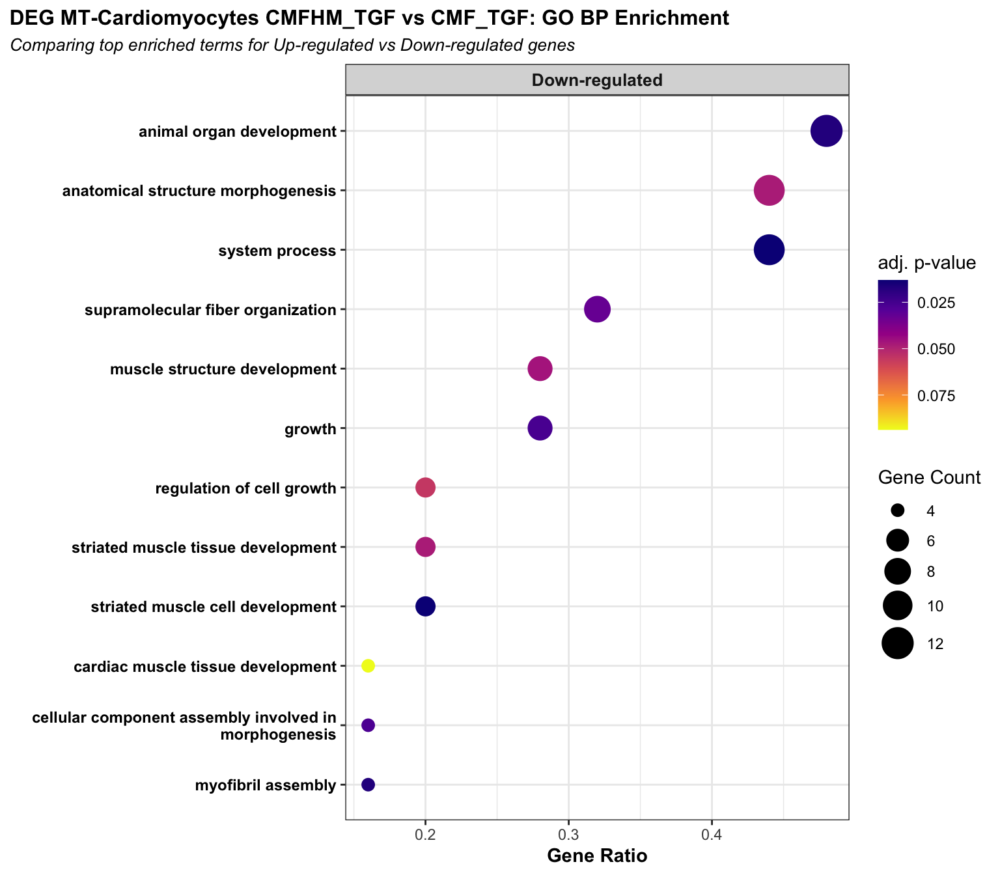
7.1 EMAP Plot
set.seed(42)
################################################### Upregulated Go terms - none found
############################ top 30
# simp.up.GO <- pairwise_termsim(simp.up.GO)
#
# emapplot(
# simp.up.GO,
# showCategory = 30,
# node_label = "group",
# nCluster = 5,
# nWords = 4,
# node_label_size = 3.5
# ) +
# theme_bw() +
# labs(
# title = "DEG MT-Cardiomyocytes CMFHM_TGF vs CMF_TGF: GO BP Enrichment",
# subtitle = "Functional clustering map of top enriched terms for Up-regulated genes",
# x = "",
# y = ""
# ) +
# theme(
# plot.title.position = "plot",
# plot.title = element_text(face = "bold", size = 12, hjust = 0),
# plot.subtitle = element_text(face = "italic", size = 10, hjust = 0),
# axis.text.y = element_blank(),
# axis.text.x = element_blank(),
# axis.ticks = element_blank(),
# panel.grid = element_blank(),
# legend.position = "right"
# )
#
# ############################ All signif. Pathways
#
# simp.up.GO.sign$NES <- simp.up.GO.sign$zScore
#
# p_apear <- enrichmentNetwork(
# enrichment = simp.up.GO.sign,
# repelLabels = TRUE,
# drawEllipses = TRUE,
# colorBy = "NES",
# colorType = "nes"
# )
#
# p_apear <- p_apear + labs(
# title = "DEG MT-Cardiomyocytes CMFHM_TGF vs CMF_TGF: GO BP Enrichment",
# subtitle = "Functional clustering map of all sign. enriched terms for Up-regulated genes",
# color = "z-Score",
# ) +
# theme(
# plot.title.position = "plot",
# plot.title = element_text(face = "bold", size = 12, hjust = 0),
# plot.subtitle = element_text(face = "italic", size = 10, hjust = 0)
# )
#
# print(p_apear)
################################################### Down Go terms
############################ top 30
simp.down.GO <- pairwise_termsim(simp.down.GO)
emapplot(
simp.down.GO,
showCategory = 30,
node_label = "group",
nCluster = 5,
nWords = 4,
node_label_size = 3.5
) +
theme_bw() +
labs(
title = "DEG MT-Cardiomyocytes CMFHM_TGF vs CMF_TGF: GO BP Enrichment",
subtitle = "Functional clustering map of top enriched terms for Down-regulated genes",
x = "",
y = ""
) +
theme(
plot.title.position = "plot",
plot.title = element_text(face = "bold", size = 12, hjust = 0),
plot.subtitle = element_text(face = "italic", size = 10, hjust = 0),
axis.text.y = element_blank(),
axis.text.x = element_blank(),
axis.ticks = element_blank(),
panel.grid = element_blank(),
legend.position = "right"
)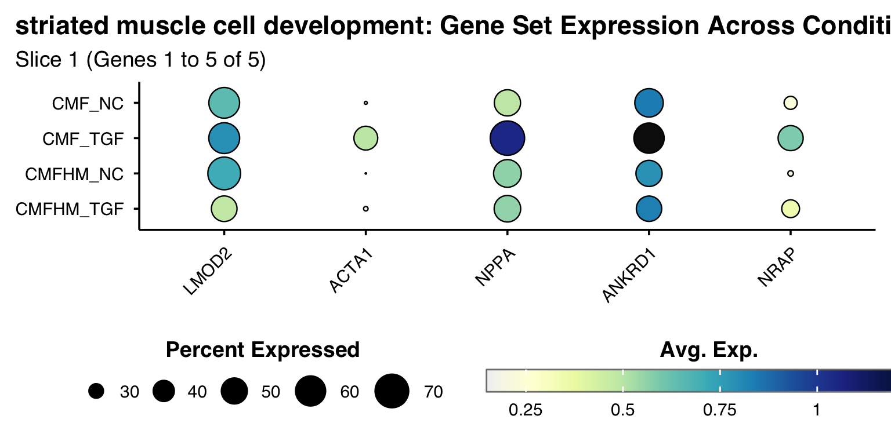
############################ All signif. Pathways
simp.down.GO.sign$NES <- simp.down.GO.sign$zScore
p_apear <- enrichmentNetwork(
enrichment = simp.down.GO.sign,
repelLabels = TRUE,
drawEllipses = TRUE,
fontSize = 3,
colorBy = "NES",
colorType = "nes"
)
p_apear <- p_apear + labs(
title = "DEG MT-Cardiomyocytes CMFHM_TGF vs CMF_TGF: GO BP Enrichment",
subtitle = "Functional clustering map of all sign. enriched terms for Down-regulated genes",
color = "z-Score",
) +
theme(
plot.title.position = "plot",
plot.title = element_text(face = "bold", size = 12, hjust = 0),
plot.subtitle = element_text(face = "italic", size = 10, hjust = 0)
)
print(p_apear)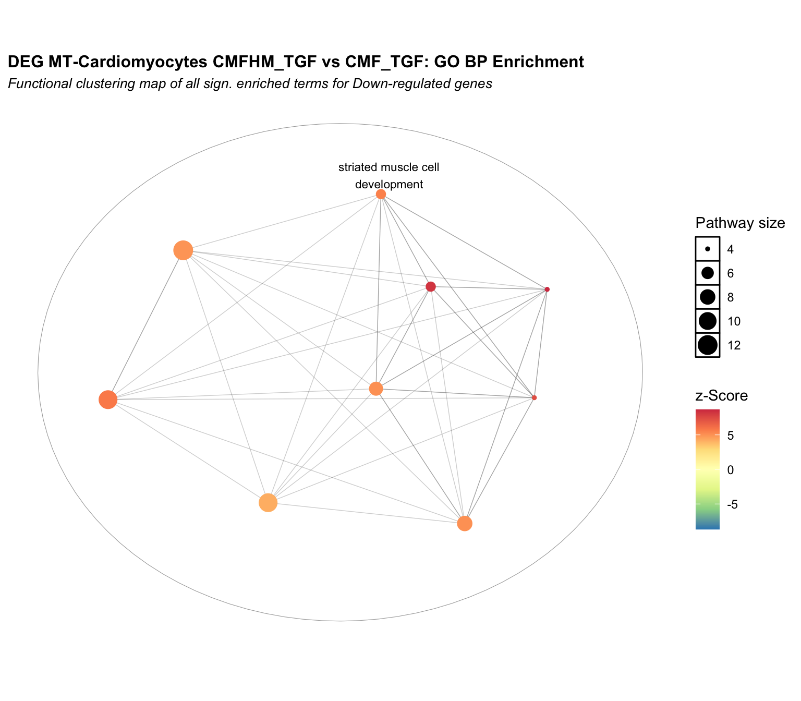
| Version | Author | Date |
|---|---|---|
| 28d634c | Sophie.Alice | 2026-07-16 |
##################### combining the 2 lists
# simp.up.GO.sign$NES <- simp.up.GO.sign$zScore
simp.down.GO.sign$NES <- -simp.down.GO.sign$zScore
combined.enrichment <- simp.down.GO.sign
duplicate_Descriptions <- combined.enrichment %>%
dplyr::group_by(Description) %>%
dplyr::filter(n() > 1) %>%
dplyr::pull(Description) %>%
unique()
combined.enrichment$Description <- ifelse(
combined.enrichment$Description %in% duplicate_Descriptions,
paste0(combined.enrichment$Description, " (", ifelse(combined.enrichment$NES > 0, "Up", "Down"), ")"),
combined.enrichment$Description
)
combined.enrichment$ID <- paste0(combined.enrichment$ID, ifelse(combined.enrichment$NES > 0, "_Up", "_Down"))
p_combined <- enrichmentNetwork(
enrichment = combined.enrichment,
repelLabels = TRUE,
drawEllipses = TRUE,
fontSize = 3,
colorBy = "NES",
colorType = "nes"
)
p_combined <- p_combined + labs(
title = "DEG MT-Cardiomyocytes CMFHM_TGF vs CMF_TGF: Combined GO BP Enrichment",
subtitle = "Network map between Up-regulated (Red) and Down-regulated (Blue) processes",
color = "Directional z-Score"
) +
theme(
plot.title.position = "plot",
plot.title = element_text(face = "bold", size = 12, hjust = 0),
plot.subtitle = element_text(face = "italic", size = 10, hjust = 0)
)
print(p_combined)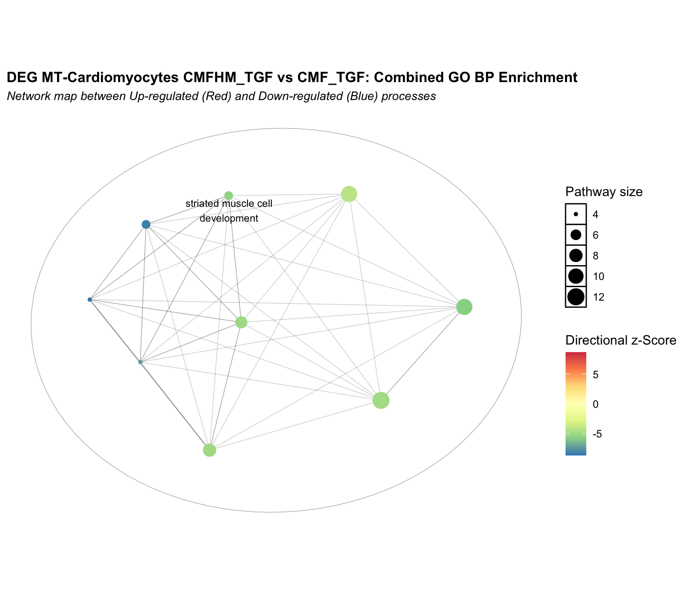
| Version | Author | Date |
|---|---|---|
| 28d634c | Sophie.Alice | 2026-07-16 |
8 Deeper look into specific Genesets
9 Upregulated in Cardiomyocytes upon Macrophage addition (with TGF-B stimulation)
9.1 None found!
10 Downregulated in Cardiomyocytes upon Macrophage addition (with TGF-B stimulation)
10.1 striated muscle cell development
simp.down.GO.df <- as.data.frame(simp.down.GO)
descr <- "striated muscle cell development"
genes <- simp.down.GO.df %>%
filter(Description == descr) %>%
pull(geneID) %>%
stringr::str_split("/") %>%
unlist()
chunk_size <- 25
total_genes <- length(genes)
if (total_genes > 0) {
for (i in seq(1, total_genes, by = chunk_size)) {
end_idx <- min(i + chunk_size - 1, total_genes)
slice_num <- ((i - 1) / chunk_size) + 1
print(SCpubr::do_DotPlot(
sample = Cardiomyocytes,
features = genes[i:end_idx],
dot.scale = 10,
plot.title = "striated muscle cell development: Gene Set Expression Across Conditions",
plot.subtitle = paste0("Slice ", slice_num, " (Genes ", i, " to ", end_idx, " of ", total_genes, ")")
))
}
}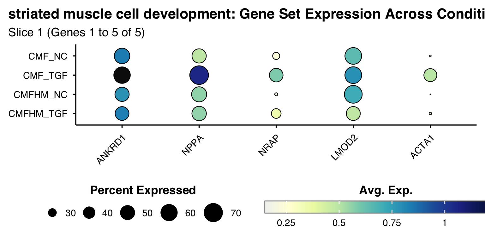
chunk_size <- 9
total_genes <- length(genes)
for (i in seq(1, total_genes, by = chunk_size)) {
end_idx <- min(i + chunk_size - 1, total_genes)
slice_num <- ((i - 1) / chunk_size) + 1
print(raincloud.plots(
gene_list = genes[i:end_idx],
plot_title = "Cardiomyocytes CMFHM_TGF vs CMF_TGF: Gene distribution profiles across MT conditions",
plot_subtitle = paste0("Geneset = striated muscle cell development - Slice ", slice_num),
seurat_obj = Cardiomyocytes,
colors = gradient_colors4
))
}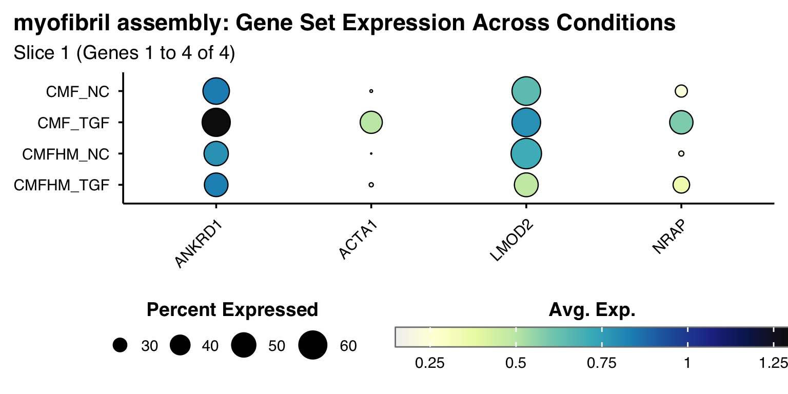
10.2 myofibril assembly
simp.down.GO.df <- as.data.frame(simp.down.GO)
descr <- "myofibril assembly"
genes <- simp.down.GO.df %>%
filter(Description == descr) %>%
pull(geneID) %>%
stringr::str_split("/") %>%
unlist()
chunk_size <- 25
total_genes <- length(genes)
if (total_genes > 0) {
for (i in seq(1, total_genes, by = chunk_size)) {
end_idx <- min(i + chunk_size - 1, total_genes)
slice_num <- ((i - 1) / chunk_size) + 1
print(SCpubr::do_DotPlot(
sample = Cardiomyocytes,
features = genes[i:end_idx],
dot.scale = 10,
plot.title = "myofibril assembly: Gene Set Expression Across Conditions",
plot.subtitle = paste0("Slice ", slice_num, " (Genes ", i, " to ", end_idx, " of ", total_genes, ")")
))
}
}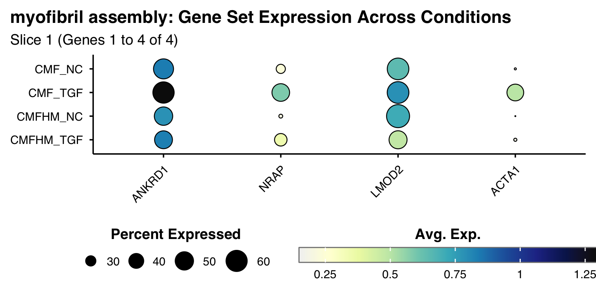
chunk_size <- 9
total_genes <- length(genes)
for (i in seq(1, total_genes, by = chunk_size)) {
end_idx <- min(i + chunk_size - 1, total_genes)
slice_num <- ((i - 1) / chunk_size) + 1
print(raincloud.plots(
gene_list = genes[i:end_idx],
plot_title = "Cardiomyocytes CMFHM_TGF vs CMF_TGF: Gene distribution profiles across MT conditions",
plot_subtitle = paste0("Geneset = myofibril assembly - Slice ", slice_num),
seurat_obj = Cardiomyocytes,
colors = gradient_colors4
))
}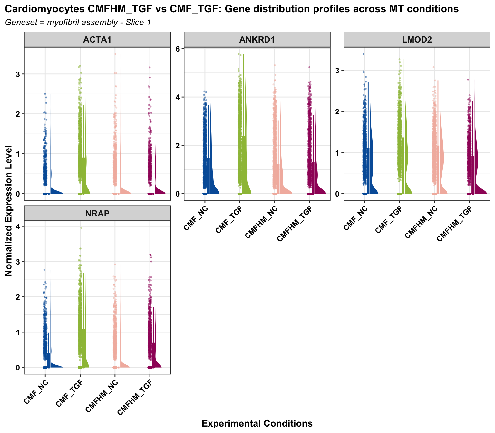
11 Checking for specific Marker genes
11.1 Pro-Fibrotic Genes
genes <- c("ACTA2", "FN1", "COL1A1")
SCpubr::do_DotPlot(Cardiomyocytes,
features = genes,
dot.scale = 10,
plot.title = "Pro-Fibrotic Genes: Gene Set Expression Across Conditions") 
raincloud.plots(
gene_list = genes,
plot_title = "Cardiomyocytes CMFHM_TGF vs CMF_TGF: Gene distribution profiles across MT conditions",
plot_subtitle = "Geneset = Pro-Fibrotic genes",
seurat_obj = Cardiomyocytes,
colors = gradient_colors4
)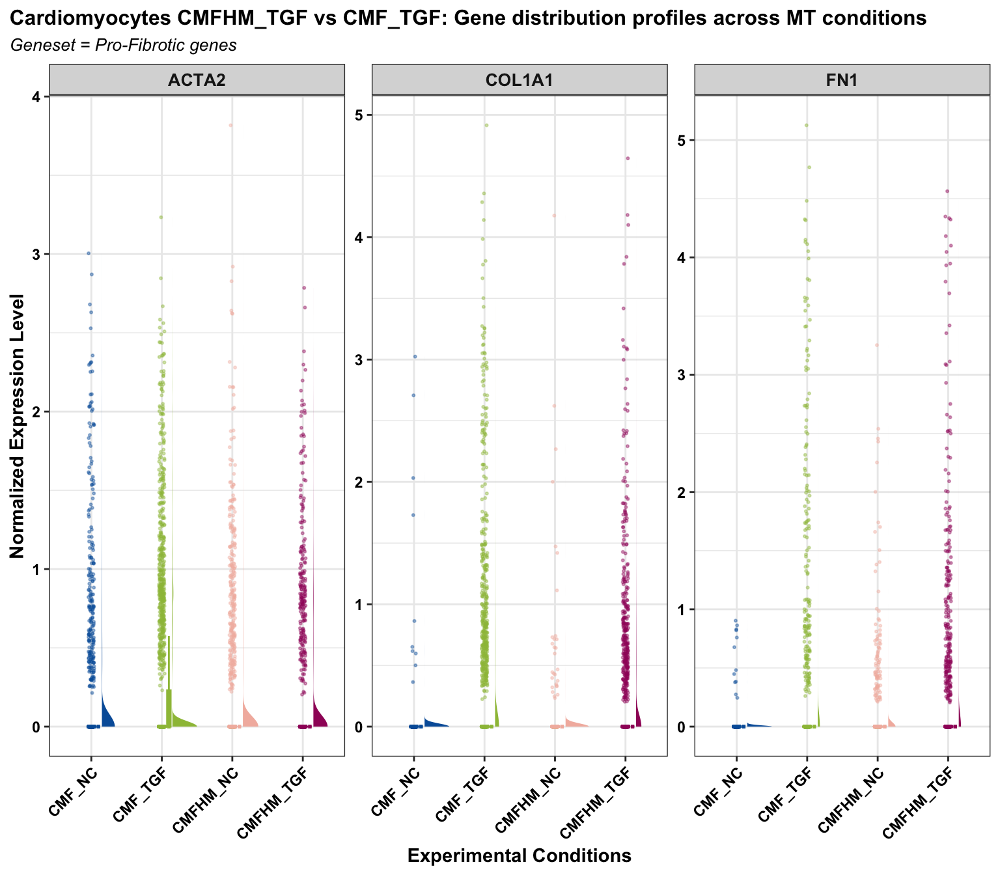
| Version | Author | Date |
|---|---|---|
| 28d634c | Sophie.Alice | 2026-07-16 |
sessionInfo()R version 4.6.0 (2026-04-24)
Platform: aarch64-apple-darwin23
Running under: macOS Sequoia 15.7.7
Matrix products: default
BLAS: /Library/Frameworks/R.framework/Versions/4.6/Resources/lib/libRblas.0.dylib
LAPACK: /Library/Frameworks/R.framework/Versions/4.6/Resources/lib/libRlapack.dylib; LAPACK version 3.12.1
locale:
[1] en_US.UTF-8/en_US.UTF-8/en_US.UTF-8/C/en_US.UTF-8/en_US.UTF-8
time zone: Europe/Zurich
tzcode source: internal
attached base packages:
[1] stats4 stats graphics grDevices utils datasets methods
[8] base
other attached packages:
[1] aPEAR_1.0 ggrain_0.1.2
[3] enrichplot_1.32.0 ggforce_0.5.0
[5] DT_0.34.0 UCell_2.16.0
[7] assertthat_0.2.1 SCpubr_3.0.1
[9] forcats_1.0.1 fgsea_1.38.0
[11] DOSE_4.6.0 GO.db_3.23.1
[13] org.Hs.eg.db_3.23.1 AnnotationDbi_1.74.0
[15] clusterProfiler_4.20.0 ggtangle_0.1.2
[17] ggarchery_0.4.4 EnhancedVolcano_1.30.0
[19] tibble_3.3.1 MAST_1.38.0
[21] speckle_1.12.0 harmony_2.0.5
[23] Rcpp_1.1.1-1.1 clustree_0.5.1
[25] ggraph_2.2.2 scDblFinder_1.26.2
[27] SingleCellExperiment_1.34.0 SummarizedExperiment_1.42.0
[29] Biobase_2.72.0 GenomicRanges_1.64.0
[31] Seqinfo_1.2.0 IRanges_2.46.0
[33] S4Vectors_0.50.1 BiocGenerics_0.58.1
[35] generics_0.1.4 MatrixGenerics_1.24.0
[37] matrixStats_1.5.0 ggrepel_0.9.8
[39] cowplot_1.2.0 patchwork_1.3.2
[41] scCustomize_3.3.0 hdf5r_1.3.12
[43] Seurat_5.5.0 SeuratObject_5.4.0
[45] sp_2.2-1 ggplot2_4.0.3
[47] dplyr_1.2.1 readr_2.2.0
[49] workflowr_1.7.2
loaded via a namespace (and not attached):
[1] ggpp_0.6.1 bayesbio_1.0.0 goftest_1.2-3
[4] Biostrings_2.80.1 vctrs_0.7.3 spatstat.random_3.5-0
[7] digest_0.6.39 png_0.1-9 shape_1.4.6.1
[10] git2r_0.36.2 deldir_2.0-4 parallelly_1.47.0
[13] fontLiberation_0.1.0 MASS_7.3-65 reshape2_1.4.5
[16] foreach_1.5.2 qvalue_2.44.0 httpuv_1.6.17
[19] withr_3.0.3 ggrastr_1.0.2 xfun_0.59
[22] ggfun_0.2.0 survival_3.8-6 memoise_2.0.1
[25] ggbeeswarm_0.7.3 gson_0.1.0 janitor_2.2.1
[28] systemfonts_1.3.2 tidytree_0.4.7 zoo_1.8-15
[31] GlobalOptions_0.1.4 pbapply_1.7-4 rematch2_2.1.2
[34] KEGGREST_1.52.2 promises_1.5.0 otel_0.2.0
[37] httr_1.4.8 restfulr_0.0.17 globals_0.19.1
[40] fitdistrplus_1.2-6 rstudioapi_0.19.0 UCSC.utils_1.7.1
[43] miniUI_0.1.2 processx_3.9.0 curl_7.1.0
[46] ScaledMatrix_1.20.0 polyclip_1.10-7 SparseArray_1.12.2
[49] xtable_1.8-8 stringr_1.6.0 evaluate_1.0.5
[52] S4Arrays_1.12.0 hms_1.1.4 irlba_2.3.7
[55] colorspace_2.1-2 polynom_1.4-1 ROCR_1.0-12
[58] reticulate_1.46.0 spatstat.data_3.1-9 magrittr_2.0.5
[61] lmtest_0.9-40 snakecase_0.11.1 later_1.4.8
[64] viridis_0.6.5 ggtree_4.2.0 lattice_0.22-9
[67] spatstat.geom_3.8-1 future.apply_1.20.2 getPass_0.2-4
[70] scattermore_1.2 XML_3.99-0.23 scuttle_1.22.0
[73] RcppAnnoy_0.0.23 pillar_1.11.1 nlme_3.1-169
[76] iterators_1.0.14 compiler_4.6.0 beachmat_2.28.0
[79] RSpectra_0.16-2 stringi_1.8.7 arules_1.7.14
[82] tensor_1.5.1 lubridate_1.9.5 GenomicAlignments_1.48.0
[85] plyr_1.8.9 crayon_1.5.3 abind_1.4-8
[88] BiocIO_1.22.0 scater_1.40.1 gridGraphics_0.5-1
[91] locfit_1.5-9.12 graphlayouts_1.2.4 bit_4.6.0
[94] fastmatch_1.1-8 whisker_0.4.1 codetools_0.2-20
[97] BiocSingular_1.28.0 crosstalk_1.2.2 bslib_0.11.0
[100] paletteer_1.7.0 plotly_4.12.0 mime_0.13
[103] splines_4.6.0 circlize_0.4.18 fastDummies_1.7.6
[106] tidydr_0.0.6 knitr_1.51 blob_1.3.0
[109] fs_2.1.0 listenv_1.0.0 expm_1.0-0
[112] MCL_1.0 ggplotify_0.1.3 Matrix_1.7-5
[115] callr_3.8.0 statmod_1.5.2 tzdb_0.5.0
[118] tweenr_2.0.3 pkgconfig_2.0.3 tools_4.6.0
[121] cachem_1.1.0 cigarillo_1.2.0 RSQLite_3.53.2
[124] viridisLite_0.4.3 DBI_1.3.0 fastmap_1.2.0
[127] rmarkdown_2.31 scales_1.4.0 grid_4.6.0
[130] ica_1.0-3 Rsamtools_2.28.0 sass_0.4.10
[133] ggprism_1.0.7 dotCall64_1.2 RANN_2.6.2
[136] farver_2.1.2 scatterpie_0.2.6 tidygraph_1.3.1
[139] yaml_2.3.12 rtracklayer_1.72.0 cli_3.6.6
[142] purrr_1.2.2 lifecycle_1.0.5 uwot_0.2.4
[145] bluster_1.22.0 BiocParallel_1.46.0 timechange_0.4.0
[148] gtable_0.3.6 rjson_0.2.23 ggridges_0.5.7
[151] progressr_0.19.0 SnowballC_0.7.1 ape_5.8-1
[154] parallel_4.6.0 limma_3.68.4 enrichit_0.1.5
[157] jsonlite_2.0.0 edgeR_4.10.1 RcppHNSW_0.7.0
[160] bitops_1.0-9 bit64_4.8.2 xgboost_3.2.1.1
[163] Rtsne_0.17 yulab.utils_0.2.4 spatstat.utils_3.2-3
[166] BiocNeighbors_2.6.0 aisdk_1.4.12 jquerylib_0.1.4
[169] metapod_1.20.0 GOSemSim_2.38.0 dqrng_0.4.1
[172] spatstat.univar_3.2-0 lazyeval_0.2.3 shiny_1.14.0
[175] htmltools_0.5.9 sctransform_0.4.3 rappdirs_0.3.4
[178] glue_1.8.1 spam_2.11-4 httr2_1.2.3
[181] XVector_0.52.0 gdtools_0.5.1 RCurl_1.98-1.19
[184] treeio_1.36.1 rprojroot_2.1.1 scran_1.40.0
[187] gridExtra_2.3.1 igraph_2.3.2 R6_2.6.1
[190] ggiraph_0.9.6 tidyr_1.3.2 labeling_0.4.3
[193] cluster_2.1.8.2 aplot_0.3.0 GenomeInfoDb_1.48.0
[196] mcprogress_0.1.1 DelayedArray_0.38.2 tidyselect_1.2.1
[199] vipor_0.4.7 fontBitstreamVera_0.1.1 future_1.70.0
[202] rsvd_1.0.5 KernSmooth_2.23-26 S7_0.2.2
[205] fontquiver_0.2.1 data.table_1.18.4 htmlwidgets_1.6.4
[208] RColorBrewer_1.1-3 rlang_1.2.0 spatstat.sparse_3.2-0
[211] lsa_0.73.4 spatstat.explore_3.8-1 ggnewscale_0.5.2
[214] beeswarm_0.4.0